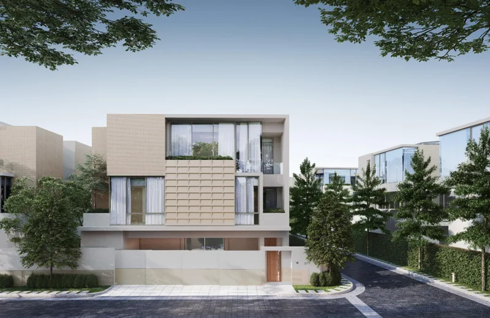

← กลับไปเลือกที่พัก
กรุงเทพฯ · รายการ 14
Noble TERRA Rama 9 – Ekamai
บ้านเดี่ยว 3 ชั้น เพียง 29 หลัง พร้อมลิฟต์ส่วนตัว ใจกลางพระราม 9–เอกมัย
สอบถามรายละเอียดบ้าน ↗
YOUR NEXT CHAPTER
พื้นที่ที่เข้ากับ
จังหวะชีวิตของคุณ
Noble TERRA Rama 9 – Ekamai (โนเบิล เทอร์รา พระราม 9–เอกมัย) โครงการบ้านเดี่ยว 3 ชั้นจาก Noble Development ออกแบบภายใต้แนวคิด Oneness with Nature เชื่อมพื้นที่อยู่อาศัยกับธรรมชาติผ่าน Tree Court ภายในบ้าน มีบ้านเพียง 29 หลัง และแบบบ้าน 4 แบบ ได้แก่ RADIX 382 ตร.ม., POLLINIS 409 ตร.ม., CORTEX 457 ตร.ม. และ FOLIUM 498 ตร.ม. พร้อมลิฟต์ส่วนตัว รองรับ 4–5 ห้องนอน 5–6 ห้องน้ำ และที่จอดรถ 3–5 คันตามแบบบ้าน
พื้นที่ใช้สอย 382–498 ตร.ม. พร้อมลิฟต์ส่วนตัว
Tree Court เชื่อมพื้นที่บ้านกับธรรมชาติ
ข้อมูลโครงการ: Noble Development ↗ · โบรชัวร์โครงการ Noble ↗ · HOMENAYOO ↗ · Home Buyers ↗
01 · LOCATION
ตำแหน่งที่พักบน Google Maps
เดินทางและใช้ชีวิต
ตั้งอยู่ในซอยจำเนียรเสริม แขวงวังทองหลาง เขตวังทองหลาง กรุงเทพฯ เชื่อมต่อถนนประดิษฐ์มนูธรรมผ่านซอยประดิษฐ์มนูธรรม 1 และถนนพระราม 9 ผ่านซอยพระราม 9 ที่ 17 เหมาะกับการเดินทางด้วยรถยนต์สู่ย่านพระราม 9 เอกมัย และเลียบทางด่วน
ค้นหาที่พักบน Google Maps ↗จุดหมายรอบโครงการ
ใกล้ Golden Place พระราม 9 และโรงเรียนนานาชาติ Regent’s เชื่อมต่อ Central Rama 9 และโรงพยาบาลปิยะเวท ดูระยะทางโดยประมาณและเปิดเส้นทางจริงได้จากแผนภาพด้านล่าง
Noble TERRA Rama 9 – Ekamai · ซอยจำเนียรเสริม วังทองหลาง
เปิดเส้นทางใน Google Maps ↗
YOUR NEIGHBOURHOOD
จากบ้าน ไปจุดหมายใกล้คุณ
สำรวจสถานที่รอบที่พัก เลือกจุดหมายแล้วเปิดเส้นทางใน Google Maps

Noble TERRA Rama 9 – Ekamai
พระราม 9 · เอกมัย
เดิน
Golden Place พระราม 9
ซื้อของสดและของใช้ใกล้บ้าน
ระยะทางโดยประมาณ
300 ม.
ดูเส้นทาง ↗
เดิน
Regent’s International School
โรงเรียนนานาชาติในย่านพระราม 9
ระยะทางโดยประมาณ
550 ม.
ดูเส้นทาง ↗
ขับรถ
Central Rama 9
ช้อปปิ้ง ร้านอาหาร และไลฟ์สไตล์
ระยะทางโดยประมาณ
5.6 กม.
ดูเส้นทาง ↗
ขับรถ
โรงพยาบาลปิยะเวท
โรงพยาบาลในย่านพระราม 9
ระยะทางโดยประมาณ
4.3 กม.
ดูเส้นทาง ↗
แผนภาพแสดงการเชื่อมต่อ ไม่อิงทิศทางหรือมาตราส่วน · ระยะทางโดยประมาณตามแหล่งอ้างอิง ระยะเส้นตรงและเส้นทางจริงอาจต่างกัน · กดดูเส้นทางเพื่อตรวจระยะทางและเวลาปัจจุบัน
ข้อมูลการเดินทาง: HOMENAYOO ↗
MORE THAN A ROOM
เติมความสุข
ให้วันธรรมดา
สิ่งอำนวยความสะดวกของโครงการ
Clubhouse พร้อมสระว่ายน้ำระบบเกลือ สระเด็ก และ Jacuzzi รวมถึงฟิตเนส Welcome Lounge, Business Lounge และ Sensory Garden พร้อมระบบรักษาความปลอดภัยและ CCTV ตลอด 24 ชั่วโมง ภายในบ้านมีลิฟต์ส่วนตัว Home Automation และจุดรองรับ EV Charger ตามข้อมูลโครงการ
เหมาะกับไลฟ์สไตล์ของใคร
ครอบครัวที่ต้องการบ้านขนาดใหญ่และความเป็นส่วนตัวในเมือง โดยมีโรงเรียนนานาชาติและสิ่งอำนวยความสะดวกในย่านพระราม 9–เอกมัย
02 · HOUSE PLANS
แปลนบ้านและผังโครงการ
เปรียบเทียบแบบบ้านทั้ง 4 แบบ พร้อมผังโครงการจากโบรชัวร์ Noble
ทั้งหมด 5 ภาพ
03 · YOUR LIVING SPACE
รูปภายในบ้าน
ชมภาพประกอบพื้นที่นั่งเล่น ห้องนอน และรายละเอียดภายในบ้านจากสื่อโครงการ
ทั้งหมด 5 ภาพ
04 · EXPLORE MORE
รูปบ้านและบรรยากาศโครงการ
ชมสถาปัตยกรรมและบรรยากาศจากภาพจำลองโครงการ กดที่ภาพเพื่อดูขนาดใหญ่
ทั้งหมด 6 ภาพ
MAKE IT YOURS
เลือกบ้านให้ตรงใจ ก่อนตัดสินใจ
บอกความต้องการ
ส่งชื่อโครงการ งบประมาณ วันที่ต้องการเข้าอยู่ และจำนวนผู้พัก
ดูรายละเอียดบ้าน
สอบถามราคา พื้นที่ แบบบ้าน ภาพบ้าน เฟอร์นิเจอร์ และเงื่อนไขสัญญา
วางแผนเข้าอยู่
ยืนยันความพร้อมของบ้านและนัดชมกับผู้ดูแลก่อนตัดสินใจ
บ้านยังว่างไหม และค่าเช่าเท่าไร?
ติดต่อผู้ดูแลพร้อมชื่อโครงการและวันที่ต้องการเข้าอยู่ เพื่อรับราคาและสถานะบ้านล่าสุด
ใช้ส่วนกลาง จอดรถ หรือเลี้ยงสัตว์ได้ไหม?
สิทธิส่วนกลาง ที่จอดรถ และเงื่อนไขสัตว์เลี้ยงขึ้นอยู่กับบ้านและข้อกำหนดโครงการ สอบถามผู้ดูแลเพื่อยืนยันรายละเอียดก่อนทำสัญญา
LET’S FIND YOUR PLACE
สนใจ Noble TERRA Rama 9 – Ekamai?
ส่งชื่อโครงการพร้อมงบประมาณและวันเข้าอยู่ที่ต้องการ
ให้เราช่วยประสานรายละเอียดบ้านที่เหมาะกับคุณ
เตรียมข้อความสำหรับสอบถาม